Turn-by-turn on the ring
Load a GPX route or search for a place. The display counts down the metres and names the street.
Off route, an orange pointer leads you back.
rehalo is open source and talks to the ring over Bluetooth. The animations here were recorded from the ring's own firmware while the app was connected.
Long stretches of a ride are shortened.
Load a GPX route or search for a place. The display counts down the metres and names the street.
Off route, an orange pointer leads you back.
No route: a pointer holds the direction of your destination and you pick the streets.
It arms itself when your iPhone walks away and stands down when it comes back. With a dead phone, tap your five-beat code on the ring.
The app counts how many times it went off while you were away.
Clock, battery, speed, distance, ride time and average speed, a swipe apart. Short and long taps trigger the horn, the light or a reading.
The ring pulses blue and the display shows the call. One tap silences the ringtone, mid-route too.
The firmware has a storm icon the official app never used. If rain is due within 30 minutes, the ring warns you once, and waits if you're about to turn.
Off by default. Forecasts come from Open-Meteo, with no key or account.


A guided wizard reclaims a Halo locked with a password only the old app knew. The new password is backed up in your Keychain.
Simulates the Halo and the ride, so the whole app works without a ring.
Far from your route, rehalo offers to lead you to the start or to the nearest point on it.
| What | Goes through | Account needed |
|---|---|---|
| Controlling the ring | Direct Bluetooth | None |
| Maps, search, directions | Apple Maps, so these need internet | None |
| Rain alerts | Open-Meteo, only if you turn them on; location rounded to about 1 km | None |
| Ride sync | Your own server, if you want one | Yours |
Status
rehalo is new. It connects to a real ring and the app is built, but most features haven't been tested on real rides yet. Here's where each one stands.
Early beta. If you own a SmartHalo 2, it needs testers on real rides.
The SmartHalo 2 and an iPhone on iOS 17 or later. The first-generation SmartHalo is a different design and isn't supported.
rehalo isn't on the App Store. It's installed by sideloading with your own Apple ID, using SideStore or AltStore. Add the rehalo source to one of them, and the app updates from there.
Or add it by hand under Sources: https://rehalo.app/altstore/apps.json
Development builds, rebuilt with every change, have a source of their own. Expect rough edges, and add one source or the other, not both.
By hand: https://rehalo.app/altstore/apps-dev.json
Yes, that's what the recovery wizard is for. A quirk of the firmware means the ring has to reboot once: plug a micro-USB cable into its bottom and unplug it again. The wizard notices when the ring is back.

iOS doesn't share the caller's name with apps.